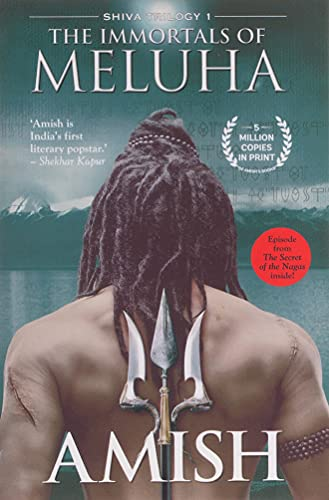

Web programming captivated me with its potential to transform ideas into tangible online experiences like creating dynamic and interactive websites, making it an exciting field to explore and excel in. I wanted to take this class to enhance my knowledge and skills in web programming and software development. Technology has always fascinated me, and the opportunity to engage in the creative process of building interactive websites is truly exhilarating. Prior to this class, I have gained a practical experience working with HTML, CSS, and Javascript, and I am enthusiastic about expanding my expertise in these areas. Additionally, I have also dabbled in Python, C, and C++, further broadening my programming skill set.
If you're on the lookout for an excellent Indian restaurant, I highly recommend visiting one of my favorite restaurant, Shanti Cambridge. It offers a delightful dining experience with a cozy ambiance and exceptional service. The diverse menu features a wide array of delectable dishes that cater to various tastes and preferences. Additionally, on Fridays and Saturdays, they serve a buffet lunch presented in a unique tiffin-style, evoking nostalgic memories of my childhood. Don't miss the opportunity to indulge in the culinary delights Shanti has to offer!
An image of my favorite food (Malai Kofta) is shown on the left. Malai Kofta is a homemade croquette with potatoes, paneer and chopped vegetables dipped in a vegetable cream sauce and cashew nuts. It is often garnished with fresh cilantro leaves and served with naan bread, roti, or rice. The gravy for Malai Kofta is made using a combination of tomatoes, onions, garlic, ginger, and a blend of aromatic spices such as cumin, coriander, turmeric, and garam masala. Cashew paste or heavy cream is added to give the gravy its creamy and luxurious texture. The koftas are gently placed in the gravy just before serving, allowing them to soak up the flavors. I absolutely love indulging in this dish, especially when it's served with a side of garlic naan. The flavors blend harmoniously, creating a mouthwatering experience that leaves me craving for more. This dish is a favorite among vegetarians and is commonly enjoyed at special occasions, festivals, and in Indian restaurants worldwide. Its aromatic flavors and creamy texture make Malai Kofta a truly satisfying and decadent culinary experience.
| Name | Cover | Author | Summary |
|---|---|---|---|
| Srimad Valmiki Ramayan | Valmiki | The Valmiki Ramayana narrates the life and adventures of Lord Rama, an incarnation of Lord Vishnu, and his journey to rescue his wife, Sita, who was abducted by the demon king Ravana. The epic spans across seven books, known as Kandas, and consists of approximately 24,000 verses. | |
| The Monk who sold his Ferrari | Robin Sharma | In this book, the story revolves around Julian Mantle, a successful lawyer who abruptly leaves his high-pressure, materialistic life to embark on a spiritual journey. | |
| The Immortals of Meluha |  | Amish Tripathi | It is a work of historical fiction that combines mythology, fantasy, and adventure. Set in ancient India, the story follows the journey of Shiva, a tribal chief from the land of Tibet, who is destined to become the legendary Lord Shiva. |
| How to Win Friends & Influence People | |
Dale Carnegie | The book offers practical advice and principles for building positive relationships, improving communication, and becoming more influential in personal and professional interactions. |